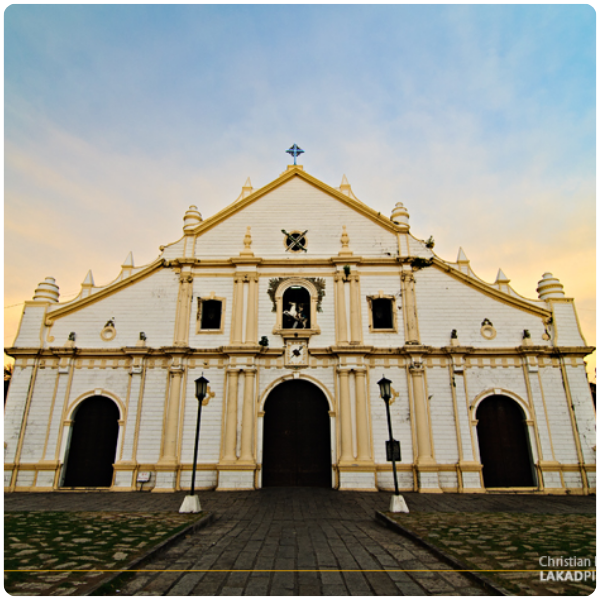

Visitor's Guide
Planning a trip to Ilocos Sur? Here is your complete guide to getting here, getting around, staying safe, and making the most of every peso. Whether it's your first visit or your tenth, these tips will help you travel smarter.
Tip 1
Ilocos Sur has a tropical climate with two distinct seasons: the dry season (November–May) and the wet season (June–October). The best time to visit is November through April, when the weather is dry, temperatures are comfortable, and travel is easiest.
Cool temperatures (18–26°C), festive atmosphere, festivals like Kannawidan and Vigan Fiesta. Book accommodations early.
Warmer (up to 34°C) but still dry. Fewer crowds, better rates, beaches are at their finest. Ideal for budget travelers.
Heavy rains and occasional typhoons. Some mountain and waterfall destinations may be inaccessible. Heritage sites in Vigan remain open year-round.
Tip 2
The nearest airport is Laoag International Airport in Ilocos Norte (approx. 80 km from Vigan). Philippine Airlines and Cebu Pacific operate regular flights from Manila. From Laoag, take a bus or van south to Vigan (1.5–2 hours). Alternatively, fly to Manila and take the bus.
Multiple bus companies operate from Manila to Vigan: Partas, Dominion Bus Lines, Florida Bus Lines, and GV Florida. The trip takes 8–10 hours by regular bus or 7–8 hours by deluxe overnight bus. The Vigan bus terminal is near the city center.
Kalesa (horse-drawn carriage): The iconic way to explore Calle Crisologo and the heritage zone. Negotiate fare (₱100–200/30 min). Tricycle: For short distances within the city. Jeepney/Van: For inter-municipality travel. Motorbike/Bicycle rental: Available in Vigan for independent exploration.
Tip 3
Ilocos Sur is generally a very safe province for tourists. Violent crime against tourists is extremely rare. However, as in any destination, common sense precautions will ensure a safe and enjoyable visit.
🔐 Secure your valuables: Keep wallets, phones, and cameras close, especially in crowded market areas and during festivals.
🌊 Water safety: Respect ocean current warnings at beaches. Only swim in designated areas and follow lifeguard instructions.
🥾 Trekking safety: Always hire a certified guide for mountain treks and waterfall visits. Inform your hotel of your plans before heading out.
🌧️ Weather awareness: During wet season (June–October), check weather forecasts and be alert for typhoon warnings.
📞 Emergency Numbers: Police (911), Bureau of Fire Protection (BFP), Vigan City Hospital: (077) 722-2220
The Ilocos Sun can be intense, especially from March to May. Apply SPF 50+ sunscreen, wear a wide-brimmed hat, and stay hydrated throughout the day.
Bring personal medications. Small pharmacies (Mercury Drug, Generika) are available in Vigan City. The nearest major hospital is in Ilocos Norte for serious emergencies.
Drink bottled or filtered water. Street food is generally safe from established vendors. If you have a sensitive stomach, introduce spicy Ilocano food gradually.
Use mosquito repellent, especially during evening outdoor activities and waterfall treks. Bring long sleeves for jungle/forest areas.
Tip 4
Ilocos Sur is one of the most affordable provinces in the Philippines. Here's how to stretch your peso further.
₱500–1,000 per day
₱1,500–3,000 per day
₱3,500+ per day
💡 Money Saving Tip: Visit Calle Crisologo, Plaza Burgos, Bantay Church, Vigan Cathedral, and the Burnay pottery area for FREE. Many of Ilocos Sur's best experiences cost nothing at all.
Tip 5
Ilocanos are proud of their heritage and culture. Being a respectful, responsible tourist will ensure warm welcome and authentic connections with locals. Here's how to be a model visitor:
⛪ At Churches & Heritage Sites: Dress modestly (covered shoulders and knees). No loud behavior. Ask permission before photographing locals during religious ceremonies.
🏘️ In Local Communities: Greet residents with a smile and a "Kablaaw" (hello in Ilocano). Ask before entering private ancestral homes even if they appear to be open.
🌿 In Nature: Leave no trace. Do not pick plants, disturb wildlife, or carve names into historic structures. Bring your trash out from trekking trails.
📸 Photography: Always ask permission before taking close-up photos of people. Some artisans and vendors prefer not to be photographed while working.
🛍️ Shopping & Bargaining: Gentle bargaining is acceptable in markets but be respectful. Handmade products like Abel cloth represent hours of labor — pay fair prices.

Ready to Go?
Have more questions? Our tourism team is ready to help you plan the perfect Ilocos Sur itinerary.